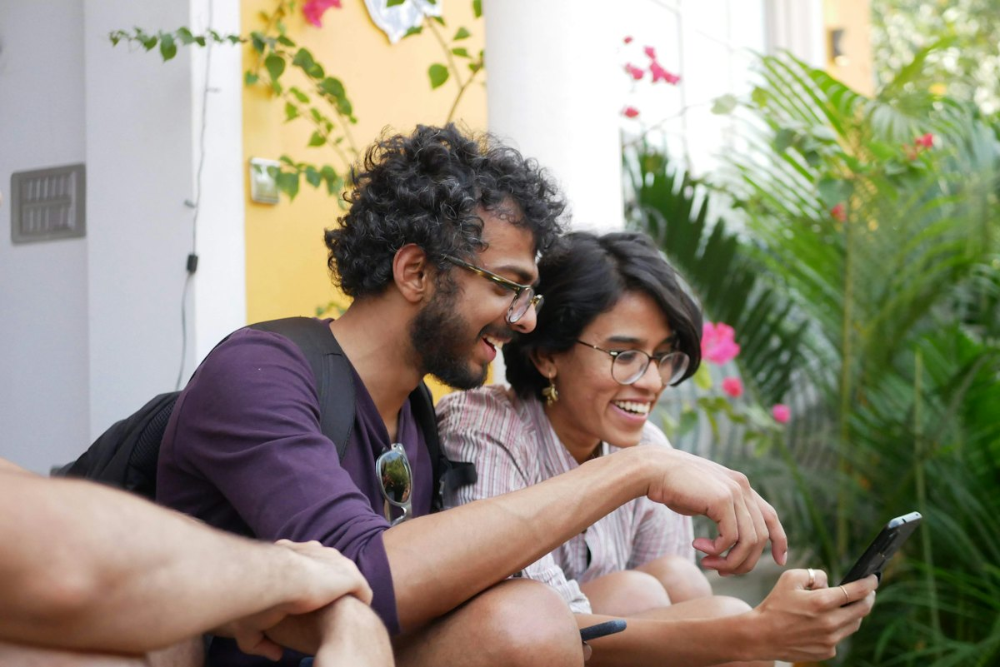

Ficha de sesión · S01 · solo docente
| § | Bloque | Min |
|---|---|---|
| 1 | Warm-up · lock screen | 4 |
| 2 | Vocabulary · Sixty-Second Sell | 8 |
| 3 | Grammar · Sentence Auction | 12 |
| 4 | Listening · Two Versions | 8 |
| 5 | Speaking · Blind Ranking + 12 preguntas | 13 |
| 6 | Mission · Relay the Message | 10 |
| 7 | Wrap-up | 5 |
| Total | 60 |
Warm-up · Your phone just exploded
Teacher notes · §1 Warm-up
Pedagógica
- Pide que cada persona toque las notificaciones en SU orden. Al tocar, aparecen los chips de «información importante»: es la primera vez que ven la habilidad central del curso (leer → sacar el dato).
- Habla desde el minuto 1: «Which one first? Why?». Acepta cualquier inglés; recast suave de errores, sin gramática todavía.
- Grupo: cada quien dice su primera en voz alta y se cuenta cuántos coinciden. 1:1: tú eliges otra primera para provocar «Why?».
- Máx. 4 min. No expliques says/said aquí; solo deja que lo escuchen en tu voz.
Engagement
- Pregunta real: «¿Cuál notificación contestaste mal alguna vez por leer rápido?»
- Declaración de cierre: «Today I can find the important information in a message.»
Crecimiento
- «In 56 minutes you'll pass these messages to a partner — and your partner will act on them.»
- Anota cuál abrió primero cada alumno: se compara con el ranking del §5.
Vocabulary · 12 chunks for messages
Tap to flip · 🔊 to listen
0 / 12 flippedMatch the word with its meaning
0 / 6 pairsSixty-Second Sell — why THIS word and not that one?
Sold 0 / 41. Read the situation. 2. Choose the better word. 3. You have 60 seconds to defend it out loud — start with “I choose… because…”. The group votes: sold or not sold.
Teacher notes · §2 Vocabulary
Pedagógica
- Flips: tú dices el chunk, el alumno repite 2 veces y da su propio ejemplo con un dato real. Pronunciación clave: deadline /ˈdedlaɪn/, detail (acento en la 1.ª sílaba en inglés americano), asked us to ligado /æskt əs tə/.
- Match: respuesta en voz alta antes del clic.
- Sixty-Second Sell (CONTRARRELOJ): el alumno lee la situación (≤25 palabras), prepara 30 s EN SILENCIO y luego defiende hablando 60 s sin notas. El punto lo gana quien PRODUCE una razón en inglés, no quien elige más rápido. El grupo vota «sold / not sold».
- Explica la dinámica en 3 frases (ya están en pantalla). No más de 3 min de setup.
Engagement
- Cierra en voz alta: «We sold __ of 4 words.»
- Pregunta: «¿Cuál de estas palabras usas más en el trabajo… y cuál nunca dices en inglés?»
Crecimiento
- Estos 12 chunks sostienen todo el Bloque 1 (Receive). Confirm, forward y follow-up vuelven en el Bloque 2 (Clarify).
- Tarea derivada: usa 3 chunks en mensajes reales esta semana.
Grammar · The message says… Marta said…
Read the chat. Which words show where the information comes from?
The message says the call is at 11:30.
Does it say the room?
No, it doesn't say the room. Marta said she will send it.
OK. She asked us to bring the new numbers, right?
Say WHERE the information comes from
1 · A source says
The app says the gate is B7. · The email says the order arrives Monday.
2 · A person said
Marta said the call is at 11:30. · Marta asked us to bring the numbers.
3 · Keep the key info the same
Don't change the details. Opinion goes separately: I think…
| Source (now) | Person (before) | |
|---|---|---|
| + | The message says the room is 3. | Marta said the room is 3. |
| − | The message doesn't say the room. | Marta didn't say the room. |
| ? | Does the message say the room? | Did Marta say the room? |
Today you only use says / said / doesn't say / didn't say. Nothing else changes: the information stays in the same tense as the message.
¿Qué es? Es la forma de decir DE DÓNDE sale un dato: The message says… (la fuente habla ahora) o Marta said… (una persona lo dijo antes).
¿Cómo se usa? says lleva -s porque «the message / the app» es tercera persona. En negativo y pregunta el verbo vuelve a forma base: doesn't say, Does it say…?, didn't say.
¿Para qué hoy? Para pasar una actualización a otra persona sin cambiar el dato y sin inventar lo que el mensaje no dice.
Cuidado: said se pronuncia /sed/ (como «bed»). Y asked us to bring lleva «to», no «Marta asked us bring».
Choose the correct form
Sentence Auction — buy only the CORRECT sentences
Bank 10 pts1. You start with 10 points. 2. Buy a sentence (bid 1–3) only if it is correct. A correct buy pays double; a wrong buy costs your bid. 3. Pass on a wrong sentence and say the fixed version out loud: +1 point.
Mistakes at this level
Teacher notes · §3 Grammar
Pedagógica
- UN solo punto: says / said / doesn't say. Explicación docente ≤5 min (Discover + Tool). Practice A es la única parte mecánica (≤1/3 del bloque).
- Límite del nivel: NO enseñes cambios de tiempo («said it was…»), ni preguntas reportadas, ni pasiva. La información queda tal cual en presente: «Marta said the call is at 11:30».
- Auction: setup en 3 frases (en pantalla). El punto se gana por PRODUCIR la frase corregida en voz alta, no por rapidez. Grupo: equipos de 2–3 con un banco común; 1:1: tú subastas y el alumno compra.
- Error prioritario: says sin -s con «the message». Márcalo en voz alta cada vez que aparezca durante §4–§6.
Engagement
- «Every time you pass information, ask yourself: who said it?»
- Cierra en voz alta: «My bank is __ points.»
Crecimiento
- «Today the information stays the same. Block 2 adds confirm, clarify and ask again.»
- Anota los 3 errores más repetidos para la sección de repair en §7.
Listening · Two voice notes, one training
Alex missed the HR meeting about a safety training. Two coworkers leave a voice note. They tell the same story — but not the same details. Find the 3 differences.
Listen twice if you need to. Final audio: MP3 recorded with ElevenLabs.
Decide for each detail
Which version do you trust?
Listen · repeat · record your best
Teacher notes · §4 Listening
Pedagógica
- Dos versiones (LIS-03): Emma (inglés canadiense, 128 palabras) lee el mensaje de RH y dice «The message says…». Rahul (inglés indio, hablante no nativo, 136 palabras) NO leyó el mensaje y repite lo que le dijo Priya («Priya said…»). Hay 3 discrepancias: día (Thursday/Friday), qué traer (badge/laptop) y comida (not included/included).
- Ciclo: (1) escuchan Emma y anotan; (2) escuchan Rahul; (3) marcan same/different; (4) deciden en qué versión confiar y POR QUÉ — la que cita la fuente. Esa decisión es la habilidad objetivo de la sesión.
- Answer key: Day = different · Time (nine) = same · Room (Four) = same · Bring = different · Deadline (Wednesday) = same · Lunch = different. Más fiable: Emma. Siguiente paso de Alex: confirm with HR today.
- Cumple B1: 120–200 palabras por guion, 2 hablantes, 1 de 2 con acento no nativo (≥1/3). Marca [PARA GRABAR]: audio pendiente, mientras tanto suena la voz del navegador.
Engagement
- «Who do you trust: the person who read it, or the person who heard it?» — pide un ejemplo real de chisme de oficina.
- Cierra en voz alta: «I found __ of 3 differences.»
Crecimiento
- Este patrón (revisar la fuente antes de actuar) es la base del Bloque 2 (Clarify) y del checkpoint de S12.
Speaking · Rank the pile, then talk about it
Which notification do you answer FIRST today?
1. Alone (30 s, silent): order the 6 notifications from “answer first” to “can wait”. 2. In pairs or teams: say your order, defend it, and agree on ONE order. 3. Only the team order counts — and it must have a reason.
1 · My private order
2 · Our team order
12 questions · always 2 follow-ups

Teacher notes · §5 Speaking
Pedagógica
- Blind Ranking (RANKING): 30 s de preparación en silencio y luego se habla sin notas. Solo cuenta el orden de EQUIPO; obliga a justificar y a ceder. Grupo: pares/equipos de 3 en salas; 1:1: ordena el alumno, tú defiendes un orden distinto.
- Cada razón debe incluir «says» o «said» (ver la frase modelo). Premia con puntos la razón, no el orden «correcto» — no hay orden correcto.
- 12 preguntas, todas con 2 follow-ups (≥6 exigido por el nivel). Se eligen 6–7 según el ritmo; nunca aceptes respuesta de una palabra. Anota 2 aciertos y 3 errores repetidos para §7.
- Cierre obligatorio: el equipo anuncia su orden final en voz alta.
Engagement
- «Your team order is a real decision: that's what you do with your phone every day.»
- Las preguntas 3, 10 y 12 abren debate de interés general (silenciar el teléfono, mensajes fuera de horario, semana sin notificaciones).
Crecimiento
- Compara con el orden que cada quien eligió en §1: ¿cambió? ¿por qué?
- Cuenta los segundos que habla seguido sin español: marca personal desde S1 (SPK-08 más adelante).
Mission · Relay the Message

Your partner didn't see these messages. Make sure they can ACT on them.
For each message: 1 · Tell the important information and where it comes from. 2 · Clarify: your partner asks one question about a detail. 3 · Confirm: your partner says the action — “So I need to…, right?”
Group: pairs. Student A uses Set A, Student B uses Set B. Don't show your screen!
1:1: you tell Set A, the teacher tells Set B. Same three moves.
Success: 8 messages × 3 moves. Mark a move only when it is said aloud without reading.
Teacher notes · §6 Mission
Pedagógica
- OCULTAMIENTO: cada alumno tiene su set oculto; el compañero solo tiene lo que escucha. Esto cumple el objetivo final del programa en miniatura: comprender → identificar lo importante → comunicar → aclarar un dato → confirmar una acción.
- Tarjetas de ≤25 palabras. 30 s de lectura en silencio por mensaje, luego se habla sin mirar.
- Marca cada movimiento SOLO si se dijo en voz alta. «Tell» debe incluir says/said o una fuente; «Clarify» puede ser una de las preguntas sugeridas o propia; «Confirm» usa «So I need to…, right?».
- Si el mensaje no contiene el dato pedido, el alumno debe decir «It doesn't say» (no inventar). Ej. A4 y B1.
- No interrumpas: el feedback va en §7. Tiempo: 10 min en total (≈2.5 min por mensaje por set, 2 sets en paralelo en pares).
Engagement
- Anuncia el resultado: «__ of 24 moves. Mission complete!»
- «If your partner acts correctly, the message worked.»
Crecimiento
- S4 (Update Hunt) y S12 (Information Gap) repiten esta estructura con mensajes más largos y fuentes que se contradicen.
- Registra en el portal: movimientos hechos, cuántas veces dijo «doesn't say» correctamente.
Wrap-up · Better the second time
✓ Success
↑ Upgrade
✎ Repair
↻ Next use
Use “The message says…” once today in a real message — work, family or an app.
60 seconds · 5 questions
Today I can…

You can pass on an update and say where it comes from.
Homework: take 3 REAL notifications from your phone and write 3 sentences: “The app says… / The message says… / [Name] said…”. Next: Session 2.
Teacher notes · §7 Wrap-up
Pedagógica
- Máx. 2 aciertos y 3 correcciones de alto valor (usa tus anotaciones de §3–§6). Exit quiz en voz alta antes del clic.
- Tarea: 3 notificaciones REALES → 3 oraciones. Se revisa al inicio de S2. (Pide que no compartan datos personales sensibles.)
Engagement
- Declaración final: «Today I can pass on an update, ask about a detail and confirm what to do.»
- Compara con §1: «Minute 1: you opened by instinct. Minute 58: you read, check and pass it on.»
Crecimiento
- Registra: récord de Auction, discrepancias halladas, movimientos de misión, orden de ranking.
- «Next session: 2 messages that disagree — which one do you follow?»